1. Dashboard
1.1. Description
The dashboard is the main landing screen in SaltOS4, where users can display quick access buttons, separators, widgets, charts, and other visual elements. It is not a traditional app with forms or records, but rather a dynamic, customizable view designed to provide an overview and fast access to frequent actions.
This screen centralizes commonly used tools and relevant system information.
1.2. Main view
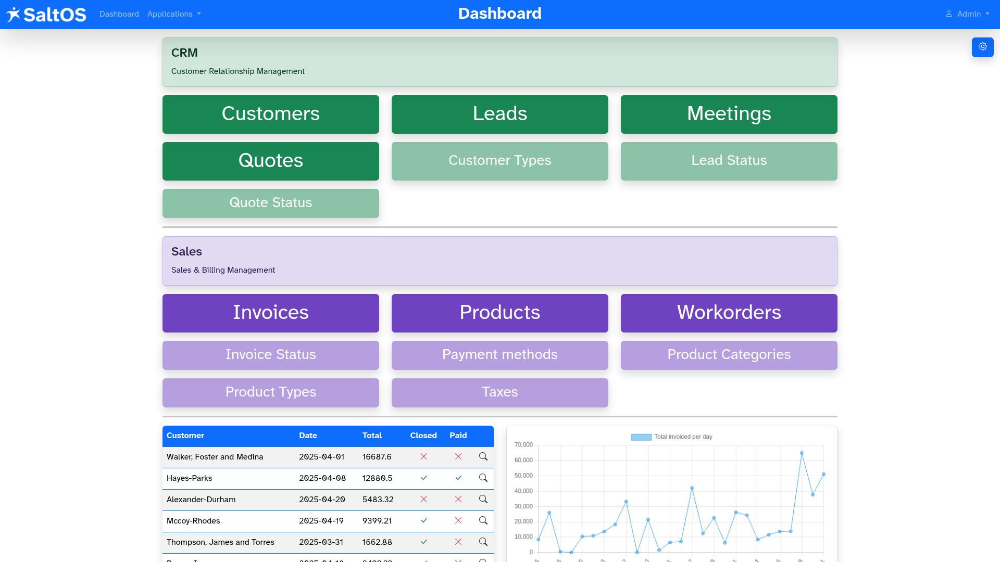
The dashboard can include:
- Quick access buttons to apps or actions
- Titles grouping sections of content
- Separators to visually organize the layout
- Widgets displaying live content (e.g., calendar, email, statistics)
1.3. Dashboard configuration
In the top right corner, there is a gear icon that opens the dashboard configuration app.
From there, users can customize their dashboard:
- Select the active dashboard
- Add or remove buttons
- Create titles and visual separators
- Group elements together in logical blocks
- Include any available widgets (e.g., mail, analytics, alerts)
This configuration is user-specific and saved automatically.
2. Dashboard configuration
2.1. Description
This application allows users to configure the content shown on the SaltOS4 dashboard. It is not a traditional app with records, but a visual, user-focused interface for customizing quick access buttons, sections, and widgets that appear on the home dashboard.
Each user can have their own personalized dashboard, and this tool is its visual editor.
2.2. Configuration view
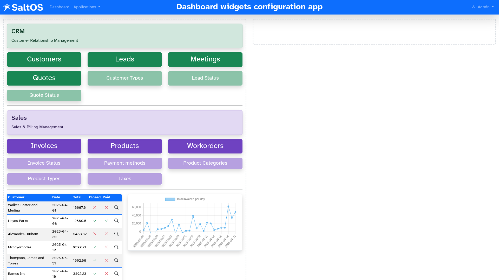
The screen displays a canvas-style layout where dashboard elements can be added, arranged, and grouped visually.
Available elements include:
- Buttons: Quick access links to apps or features.
- Separators: Visual lines or spaces to structure the layout.
- Titles: Headers to organize sections of the dashboard.
- Widgets: Dynamic components such as calendar, email, charts, stats, etc.
Elements can be grouped, reordered via drag and drop, and arranged into multiple blocks or columns.
2.3. Features
- Add or remove dashboard elements
- Reorder using drag and drop
- Edit section titles and labels
- Choose which widgets to display
- Organize layout in multiple columns or groups
Changes are saved automatically and apply only to the active user’s dashboard.
2.4. Advanced usage
This module is ideal for:
- Creating role-specific dashboards (e.g., sales, tech, admin)
- Displaying only frequently used tools and information
- Improving clarity and efficiency on the SaltOS4 start screen
3. Customers
3.1. Description
The Customers application allows you to manage your client base within SaltOS4. It centralizes all information related to customers, such as identification, contact details, tax code, address, and classification. It also serves as a hub to link customers with other modules like quotes, invoices, meetings, and emails.
3.2. List view
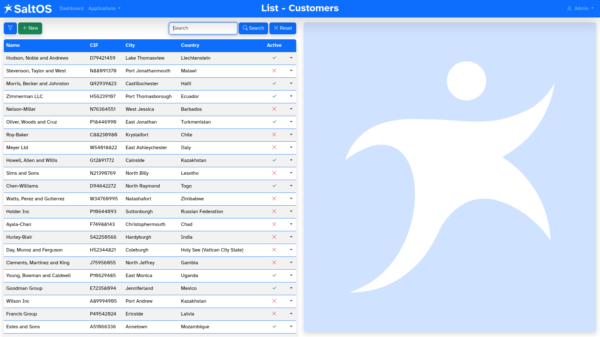
The following fields are displayed in the list view:
- Name: Full name or business name of the customer.
- CIF: Customer's tax identification code (NIF, CIF, VAT, etc.).
- City: City or locality of the customer.
- Country: Country where the customer is legally registered or operates.
- Active: Indicates if the customer is active in the system.
3.3. Form view
This view is used for creating, editing or viewing a customer record.
In create mode, the form is empty and ready to enter new data.
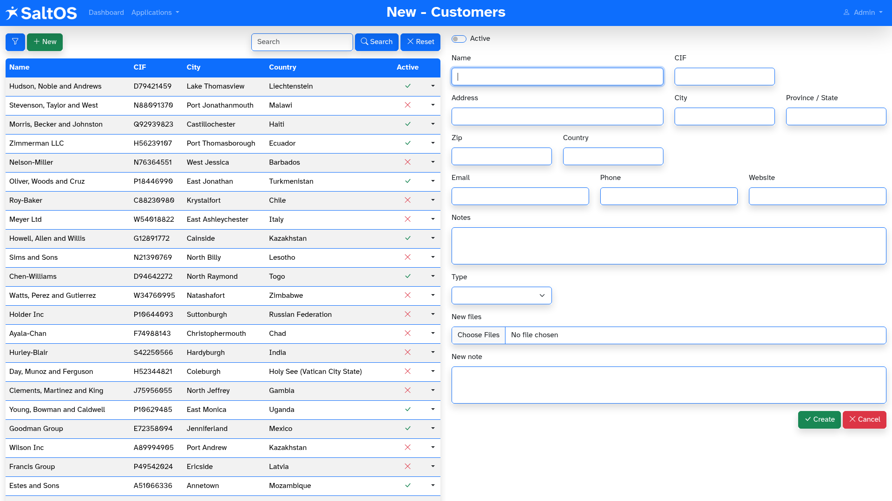
In view mode, the fields are filled with the selected record and cannot be edited.
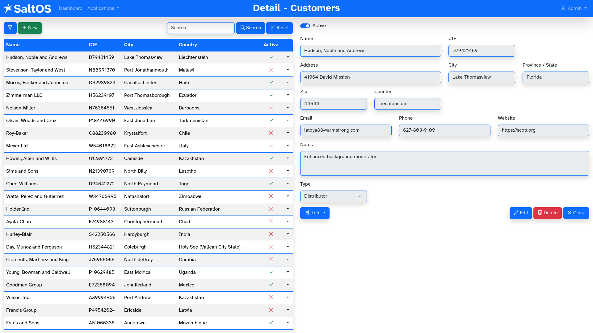
In edit mode, the form is pre-filled and allows modifications.
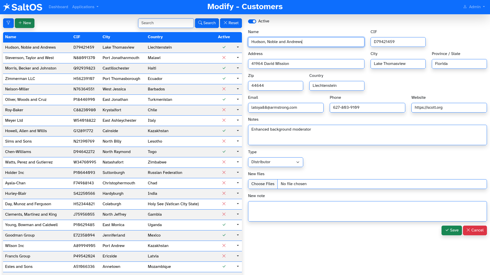
The form includes the following fields:
- Active: Enables or disables the customer visibility.
- Name: Full name or business name of the customer.
- CIF: Customer's tax identification code.
- Address: Main physical or billing address.
- City: City or locality of the customer.
- Province / State: Province or state of the customer.
- ZIP: Postal code corresponding to the address.
- Country: Country of registration.
- Email: Email for notifications or invoices.
- Phone: Primary contact phone number.
- Website: Website of the customer
- Notes: Internal notes related to the customer.
- Type: Category the customer belongs to (e.g., regular, VIP).
- Files: Attachments such as documents or images related to the job.
- Notes: Internal observations or customer-specific instructions.
3.4. Delete
Records can be deleted from the list view via the delete action. A confirmation prompt will appear before the operation is executed.
This action is irreversible and requires specific permissions.
4. Customer Types
4.1. Description
The Customer Types application allows you to define categories or segments for classifying customers. These types are used in the Customers module to group and organize clients according to their profile, purpose, or treatment. Examples may include "Individual", "Company", "VIP", or "Distributor".
4.2. List view
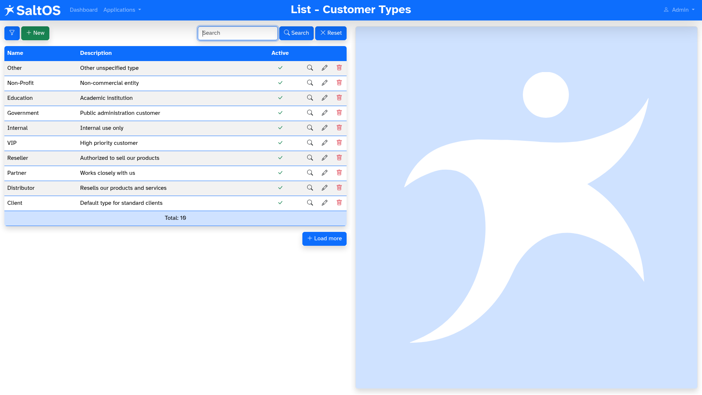
The following fields are displayed in the list view:
- Name: The label of the customer type (e.g., Company, VIP).
- Description: Additional explanation of the type’s purpose or scope.
- Active: Indicates whether the type is available for selection.
4.3. Form view
This view is used to create, view or edit customer type entries.
In create mode, the form is empty and ready to enter new data.
In view mode, the fields are filled with the selected record and cannot be edited.
In edit mode, the form is pre-filled and allows modifications.
The form includes the following fields:
- Active: Enables or disables the type for use in the Customers app.
- Name: Title of the customer type.
- Description: Optional note describing how or when to use this type.
4.4. Delete
Customer types can be deleted only if they are not assigned to any customer.
If in use, they should be deactivated instead to preserve consistency.
5. Leads
5.1. Description
The Leads application is used to register and track potential customers before they become actual clients. It allows you to collect key information about each lead, such as contact details, origin, and current status in the sales process. This module helps organize the pre-sales activity, enabling sales teams to follow up effectively, qualify opportunities, and convert leads into customers when appropriate.
5.2. List view
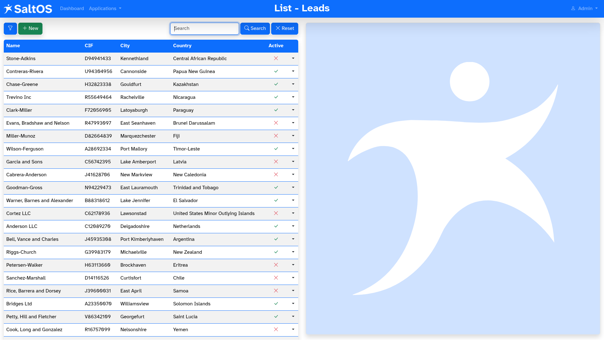
The following fields are displayed in the list view:
- Title: The title or subject of the meeting, summarizing its purpose.
- Location: The place where the meeting is held, or the online platform link if virtual.
- Start Time: Scheduled starting date and time of the meeting.
- Customer: Customer associated with the meeting, if applicable.
5.3. Form view
This view is used for creating, editing or viewing a lead.
In create mode, the form is empty and ready to enter new data.
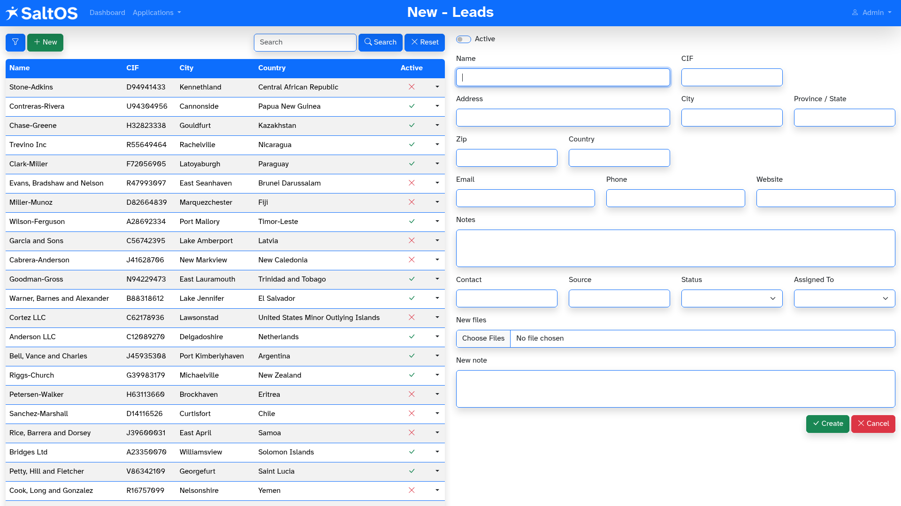
In view mode, the fields are filled with the selected record and cannot be edited.
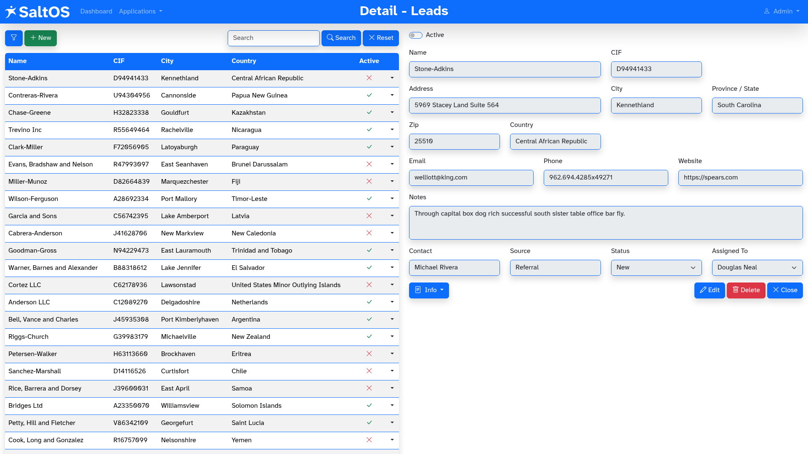
In edit mode, the form is pre-filled and allows modifications.
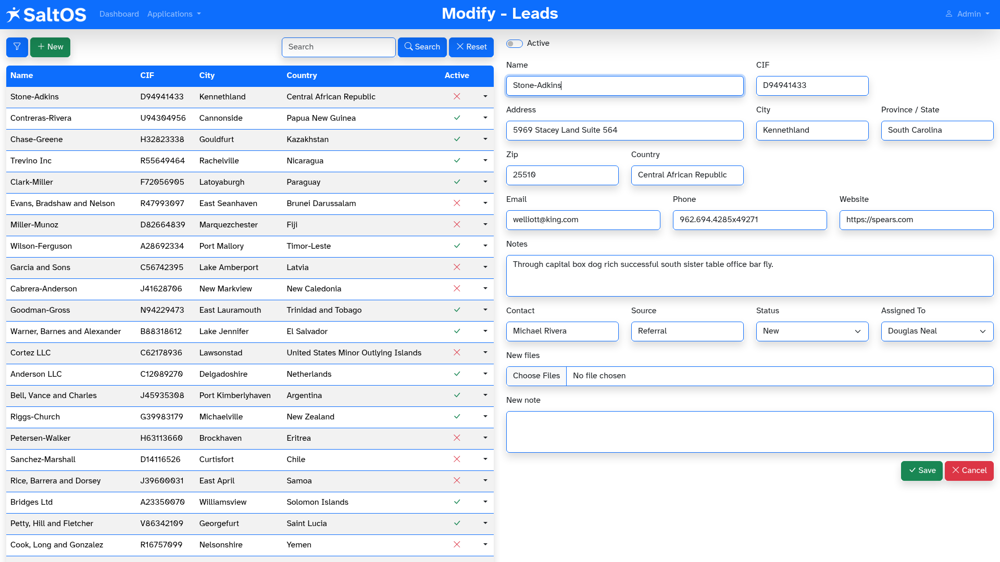
The form includes the following fields:
- Title: The title or subject of the meeting, summarizing its purpose.
- Location: The place where the meeting is held, or the online platform link if virtual.
- Start Time: Scheduled starting date and time of the meeting.
- End Time: Planned ending date and time of the meeting.
- Related Customer: Customer associated with the meeting, if applicable.
- Participants: List of users or external contacts invited to the meeting.
- Agenda: The topics or plan intended to be covered during the meeting.
- Topics Approved: Items discussed in the meeting that were approved.
- Topics Rejected: Items discussed that were not approved or postponed.
- Topics Pending: Items discussed that require further action or decision.
5.4. Delete
Records can be deleted from the list view via the delete action. A confirmation prompt will appear before the operation is executed.
This action is irreversible and requires appropriate permissions.
6. Leads Status
6.1. Description
The Leads Status application defines the possible stages or states of a lead during the qualification process. These statuses are used in the Leads module to track the sales funnel and organize follow-up efforts. Typical statuses might include "New", "Contacted", "Qualified", or "Rejected".
6.2. List view
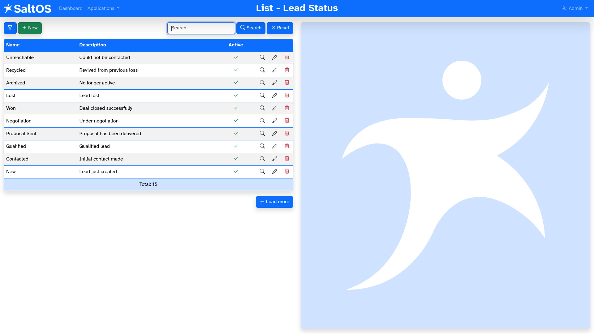
The following fields are displayed in the list view:
- Name: The label of the lead status (e.g., Contacted, Qualified).
- Description: Explanation or criteria for using this status.
- Active: Indicates if the status is currently available for selection.
6.3. Form view
This view is used to create, view or edit lead status records.
In create mode, the form is empty and ready to enter new data.
In view mode, the fields are filled with the selected record and cannot be edited.
In edit mode, the form is pre-filled and allows modifications.
The form includes the following fields:
- Active: Controls whether the status appears in dropdowns.
- Name: Title of the status as shown in the Leads app.
- Description: Internal guidance for when to use this status.
6.4. Delete
Lead statuses can only be deleted if no leads are currently assigned to them.
Otherwise, the status should be marked as inactive.
7. Meetings
7.1. Description
The Meetings application allows you to schedule, organize, and track meetings with leads, customers, or internal staff. It supports planning both face-to-face and online meetings, storing relevant details such as date, time, participants, notes, and status. This module is essential for keeping a history of client interactions, improving follow-up, and maintaining team coordination.
7.2. List view
The following fields are displayed in the list view:
- Title: The title or subject of the meeting, summarizing its purpose.
- Location: The place where the meeting is held, or the online platform link if virtual.
- Start Time: Scheduled starting date and time of the meeting.
- Customer: Customer associated with the meeting, if applicable.
7.3. Form view
This view is used for creating, editing or viewing a meeting entry.
In create mode, a new meeting is scheduled.

In view mode, details are shown read-only for reference or audit.
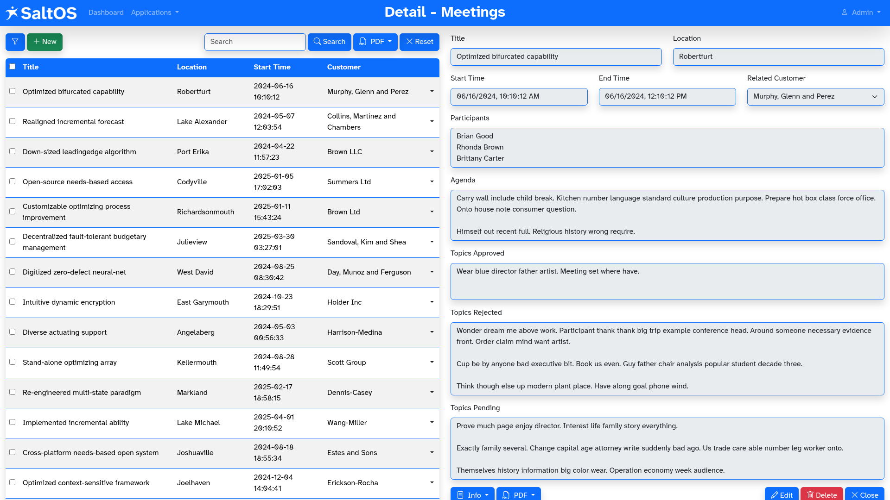
In edit mode, the meeting details can be modified if needed.
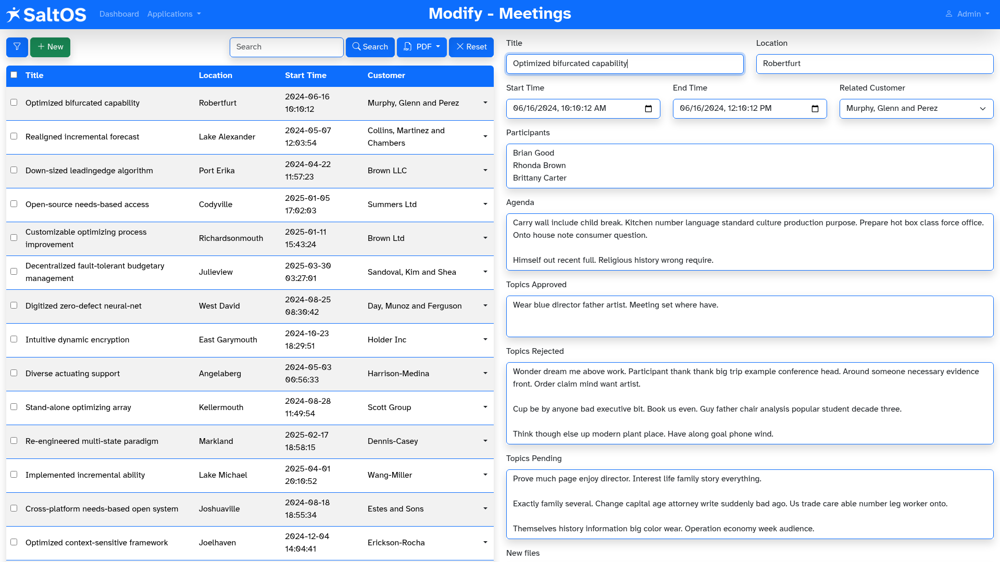
The form includes the following fields:
- Title: The title or subject of the meeting, summarizing its purpose.
- Location: The place where the meeting is held, or the online platform link if virtual.
- Start Time: Scheduled starting date and time of the meeting.
- End Time: Planned ending date and time of the meeting.
- Related Customer: Customer associated with the meeting, if applicable.
- Participants: List of users or external contacts invited to the meeting.
- Agenda: The topics or plan intended to be covered during the meeting.
- Topics Approved: Items discussed in the meeting that were approved.
- Topics Rejected: Items discussed that were not approved or postponed.
- Topics Pending: Items discussed that require further action or decision.
7.4. Delete
Meetings can be deleted from the list view if created in error or no longer relevant.
Records are usually kept for historical traceability unless explicit removal is needed.
7.5. PDF generation
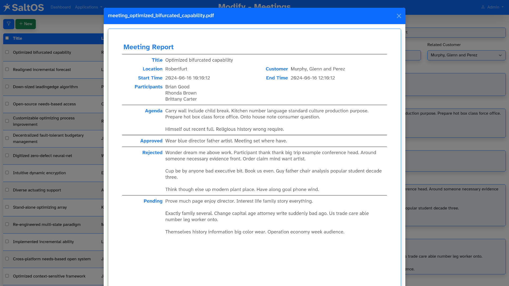
From the individual view of a record (view), the user can generate and download a PDF containing all relevant data of that entry.
From the list view (list), it is possible to select multiple records using the checkboxes and generate a single PDF that includes all of them.
8. Quotes
8.1. Description
The Quotes application is used to create and manage commercial proposals sent to customers. Each quote contains line items with products or services, pricing, taxes, and conditions. This module is tightly integrated with Customers and Products, and allows for tracking the status of each quote (e.g., Draft, Sent, Accepted). When a quote is accepted, it can be converted into an invoice.
8.2. List view
The following fields are displayed in the list view:
- Customer: The client to whom the quote is addressed.
- CIF: The customer's tax identification code (e.g., VAT, CIF, NIF).
- Quote: The internal reference or code used to identify the quote.
- Date: The official date the quote was created or issued.
- Total: The total monetary value of the quote, including all taxes and discounts.
8.3. Form view
This view is used for creating, editing or viewing a quote.
In create mode, the form is empty and allows you to build a new quote.
In view mode, it displays a finalized quote without editing capabilities.
In edit mode, it shows a draft quote ready for modification.
The form includes the following fields:
- Quote: The internal reference or code used to identify the quote.
- Date: The official date the quote was created or issued.
- Customer: The client to whom the quote is addressed.
- CIF: The customer's tax identification code (e.g., VAT, CIF, NIF).
- Address: The customer's address at the time of issuing the quote.
- City: The city associated with the customer in the quote.
- Province / State: The region or state linked to the customer's location.
- Zip: The postal code of the customer's address.
- Country: The customer's country of residence or business.
- Notes: Additional internal notes or observations attached to the quote.
- Concepts: The list of products or services included in the quote.
- Taxes: Breakdown of applicable taxes for the quoted items.
- Totals: Subtotal, taxes, and final amount displayed in a structured summary.
- Payment method: The selected method for payment if the quote is accepted.
- Valid until: The expiration date until which the quote remains valid.
- Status: The current lifecycle state of the quote (e.g., draft, sent, accepted).
Quote lines are also included as a subtable, where each line contains product, quantity, price, tax, and discount.
8.4. Delete
Quotes can be deleted from the list view if they are not yet accepted. A confirmation prompt will appear before deletion.
This action is irreversible and subject to user permissions.
8.5. PDF generation
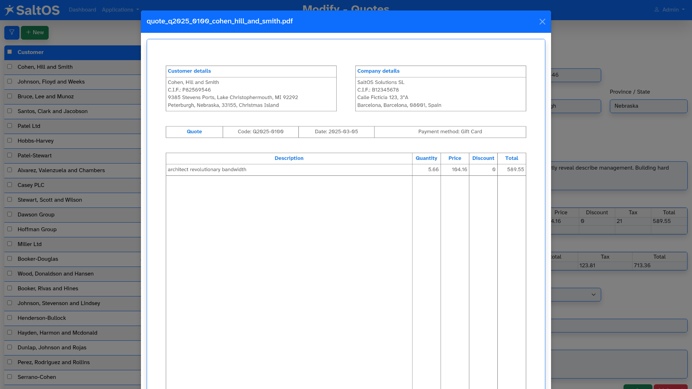
From the individual view of a record (view), the user can generate and download a PDF containing all relevant data of that entry.
From the list view (list), it is possible to select multiple records using the checkboxes and generate a single PDF that includes all of them.
9. Quotes Status
9.1. Description
The Quotes Status application is used to define the different states that a sales quote can have during its lifecycle. These statuses help sales teams track progress, filter records, and identify which quotes are active, accepted, rejected, or archived.
Examples of common statuses include "Draft", "Sent", "Accepted", and "Declined".
9.2. List view
The following fields are displayed in the list view:
- Name: Label of the status (e.g., Draft, Accepted).
- Description: Explanation of when this status is applied.
- Active: Indicates whether the status is selectable in the Quotes module.
9.3. Form view
This view is used to create, view or edit quote status entries.
In create mode, the form is empty and allows you to build a new quote.
In view mode, it displays a finalized quote without editing capabilities.
In edit mode, it shows a draft quote ready for modification.

The form includes the following fields:
- Active: Toggles the visibility of this status in dropdowns.
- Name: Name of the status as it appears in the interface.
- Description: Optional explanation for internal reference.
9.4. Delete
Quote statuses can be deleted only if they are not currently in use.
Deactivation is preferred to preserve consistency in historical records.
10. Invoices
10.1. Description
The Invoices application is used to issue and manage customer billing records. Each invoice contains product or service lines, quantities, unit prices, taxes, and discounts. This module supports both pro forma and finalized invoices, tracks payment status, and integrates with the Customers, Products, and Taxes modules. It also provides traceability for due dates, payment dates, and links to related documents.
10.2. List view
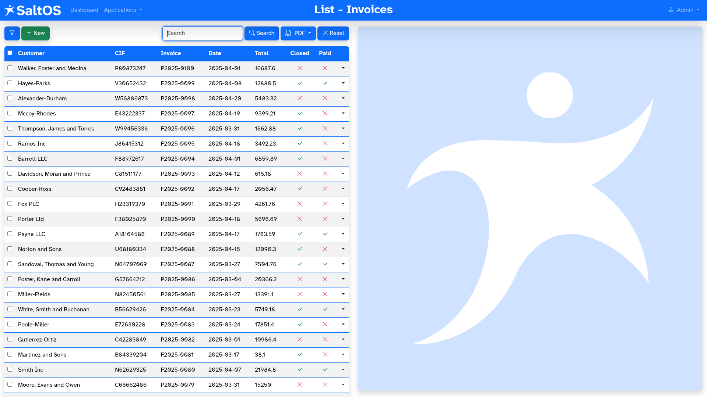
The following fields are displayed in the list view:
- Customer: The client who receives the invoice and is responsible for payment.
- CIF: The fiscal identification code of the customer at the time of invoicing.
- Invoice: The internal reference or invoice number assigned to the document.
- Date: The official issue date of the invoice.
- Total: The total amount due, including taxes and discounts.
- Closed: Indicates whether the invoice has been finalized and is no longer editable.
- Paid: Indicates whether the invoice has been marked as paid.
10.3. Form view
This view is used for creating, editing or viewing an invoice.
In create mode, the form is empty and allows the user to generate a new invoice, including pro forma invoices.
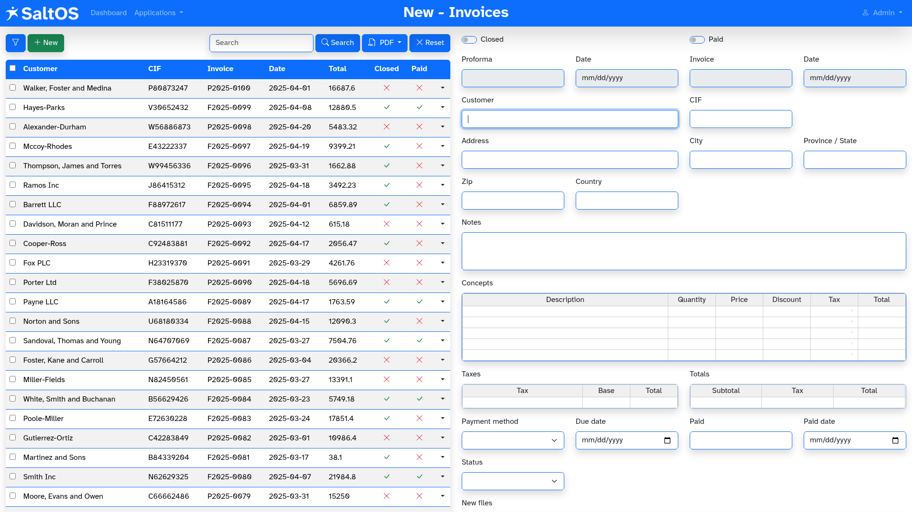
In view mode, it shows a finalized invoice in read-only mode.
In edit mode, it allows modifying a draft invoice or correcting information before finalization.
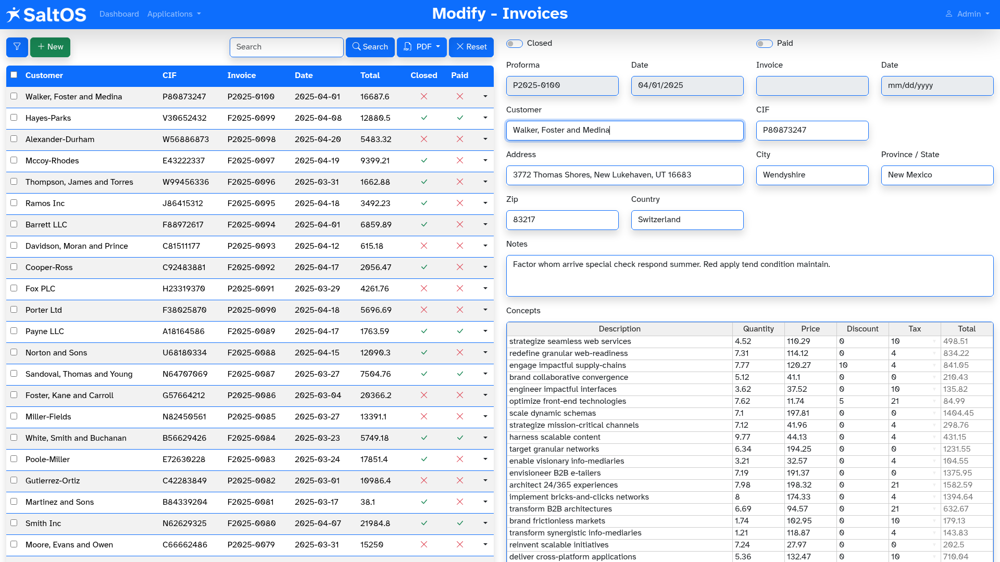
The form includes the following fields:
- Closed: Indicates whether the invoice has been finalized and is no longer editable.
- Paid: Indicates whether the invoice has been marked as paid.
- Proforma: Reference or marker indicating the invoice originated from a pro forma.
- Date: The official issue date of the invoice.
- Invoice: The internal reference or invoice number assigned to the document.
- Customer: The client who receives the invoice and is responsible for payment.
- CIF: The fiscal identification code of the customer at the time of invoicing.
- Address: The customer's address used for invoicing purposes.
- City: City corresponding to the customer's invoicing address.
- Province / State: Province or state in the billing address.
- Zip: Postal code in the billing address.
- Country: Country included in the customer's billing information.
- Notes: Internal comments or conditions attached to the invoice.
- Concepts: List of items or services included in the invoice.
- Taxes: Breakdown of taxes applied to the invoice.
- Totals: Final financial summary: subtotal, tax, and grand total.
- Payment method: The method of payment selected for the invoice.
- Due date: The date by which the invoice should be paid.
- Amount paid: Amount received.
- Paid date: The date on which the payment was received.
- Status: Current status of the invoice (e.g., draft, closed, cancelled).
Invoices also include line items (product, quantity, price, discount, tax) and a breakdown of applied taxes.
10.4. Delete
Invoices can only be deleted if they are in draft status. A confirmation prompt is shown before the operation.
Once an invoice is finalized and/or linked to a payment, deletion is restricted.
10.5. PDF generation
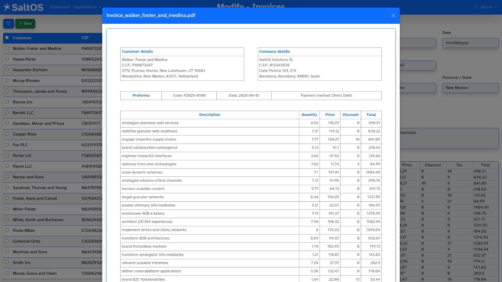
From the individual view of a record (view), the user can generate and download a PDF containing all relevant data of that entry.
From the list view (list), it is possible to select multiple records using the checkboxes and generate a single PDF that includes all of them.
10.6. Widgets on the dashboard
The invoicing application (`invoices`) publishes several widgets on the main dashboard to provide a real-time overview of the system's billing status.
The available widgets are:
- Table `last_7_invoices`: shows the 7 most recent invoices, including key information such as customer, total amount, and payment status.
- Chart `invoice_total_by_day`: displays the total amount invoiced per day, highlighting peaks and activity trends.
- Chart `invoice_avg_by_day`: shows the average daily invoice amount, useful for evaluating consistency or seasonality.
- Chart `top5_customers_by_total`: highlights the top 5 customers by billing volume, helping identify key accounts.
- Chart `invoice_paid_vs_pending`: compares the number of paid vs. pending invoices, giving insight into payment flow.
- Chart `invoice_avg_days_to_pay`: shows the average number of days customers take to pay their invoices, helping assess payment behavior.
These widgets offer useful visual insights for decision-making and allow continuous monitoring of the business's financial evolution.
11. Invoices Status
11.1. Description
The Invoices Status application allows you to define the different states that an invoice can go through during its lifecycle. These statuses help distinguish between draft, issued, paid, or cancelled invoices, enabling better financial tracking and reporting.
Common statuses may include "Draft", "Pending", "Paid", or "Cancelled".
11.2. List view
The following fields are displayed in the list view:
- Name: The name of the invoice status (e.g., Paid, Cancelled).
- Description: Explanation of the status usage or meaning.
- Active: Indicates whether this status is currently in use.
11.3. Form view
This view is used to create, view or edit invoice status entries.
In create mode, a new tax rule can be defined.
In view mode, tax details are visible but not editable.
In edit mode, existing values can be updated.
The form includes the following fields:
- Active: Allows enabling or disabling the status.
- Name: Label of the status.
- Description: Optional clarification on when to use this status.
11.4. Delete
Statuses can only be deleted if no invoice is assigned to them.
Deactivation is preferred when in use, to preserve consistency across records.
12. Payment Methods
12.1. Description
The Payment Methods application is used to define and manage the types of payments accepted by the organization. These methods are later used in invoices to indicate how the customer will pay (e.g., bank transfer, credit card, cash). This module ensures consistency and traceability across the billing process.
12.2. List view
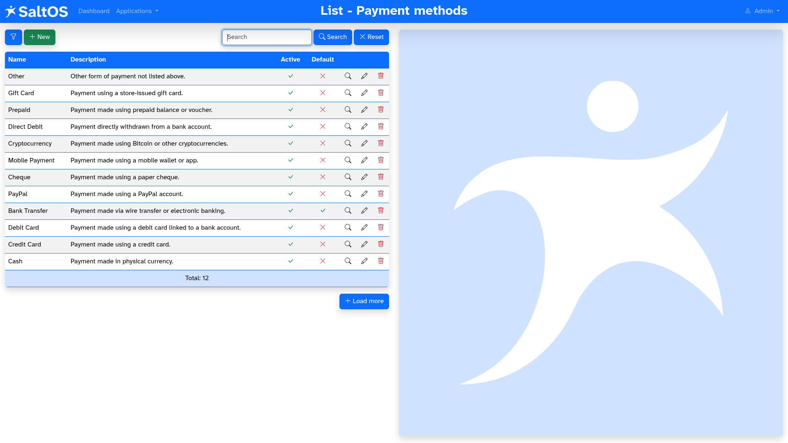
The following fields are displayed in the list view:
- Name: Name of the payment method (e.g., Cash, Bank Transfer, Credit Card).
- Description: Additional details or clarification about how the payment method is used.
- Active: Indicates whether this payment method is currently available.
- Default: Specifies if this is the default payment method when creating new records.
12.3. Form view
This view is used to create, view or edit payment method records.
In create mode, a new payment method is added.
In view mode, fields are shown in read-only mode.
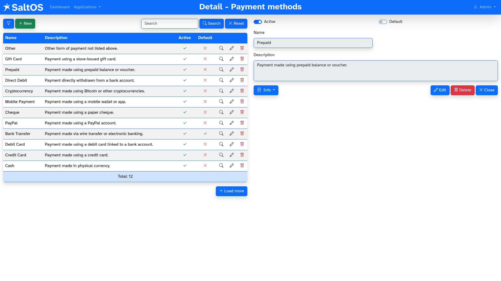
In edit mode, the details can be modified.
The form includes the following fields:
- Active: Indicates whether this payment method is currently available.
- Default: Specifies if this is the default payment method when creating new records.
- Name: Name of the payment method (e.g., Cash, Bank Transfer, Credit Card).
- Description: Additional details or clarification about how the payment method is used.
12.4. Delete
Payment methods can be deleted if not used in invoices.
If already referenced, they should be marked as inactive instead of deleted.
13. Products
13.1. Description
The Products application manages the catalog of goods and services offered by the organization. It stores essential details like reference code, price, stock levels, tax rates, and classification. Products can be linked to quotes, invoices, and purchases, making this module fundamental to sales and inventory workflows.
13.2. List view
The following fields are displayed in the list view:
- Name: The full name of the product or service, as it will appear in listings and documents.
- Code: Internal product code used to uniquely identify the item.
- Description: Detailed explanation or specifications of the product.
13.3. Form view
This view is used for creating, editing or viewing a product entry.
In create mode, the form is empty for entering a new product.
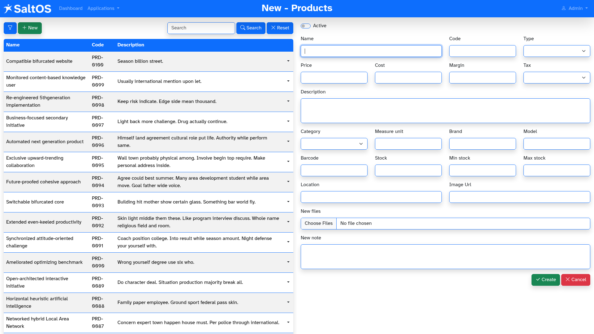
In view mode, all fields are read-only and show detailed information.
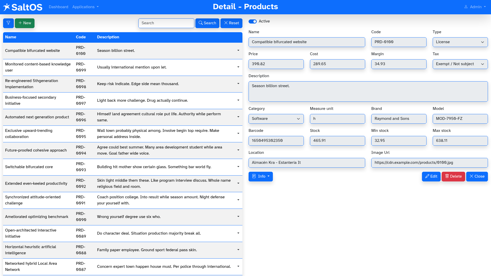
In edit mode, the product data can be updated or corrected.
The form includes the following fields:
- Active: Indicates whether the product is available for use in transactions.
- Name: The full name of the product or service, as it will appear in listings and documents.
- Code: Internal product code used to uniquely identify the item.
- Type: The classification of the product, such as item, service, or subscription.
- Price: The selling price per unit, excluding taxes or discounts.
- Cost: The internal purchase or manufacturing cost, used to calculate margins.
- Margin: Calculated profit margin based on price and cost.
- Tax: Default tax rate applied when the product is used in sales.
- Description: Detailed explanation or specifications of the product.
- Category: Product family or group, used for classification or filtering.
- Measure unit: Unit of measurement (e.g., unit, kg, hour).
- Brand: Brand name or manufacturer of the product.
- Model: Model number or variant of the product.
- Barcode: Barcode associated with the product, used for scanning or labeling.
- Stock: Current stock level available in the inventory.
- Min stock: Minimum stock threshold for restocking alerts.
- Max stock: Maximum stock level allowed in storage.
- Location: Physical or logical storage location of the product.
- Image Url: Link or path to an image representing the product.
13.4. Delete
Products can be deleted from the list view if they are not referenced in active documents. A confirmation prompt will appear before deletion.
Products linked to invoices, quotes or purchases are protected from deletion.
14. Product Categories
14.1. Description
The Product Categories application is used to group products into families or collections for easier classification. Categories are helpful for filtering, reporting, organizing catalogs, and applying common business rules.
Typical categories might include "Hardware", "Software", "Services", or "Accessories".
14.2. List view
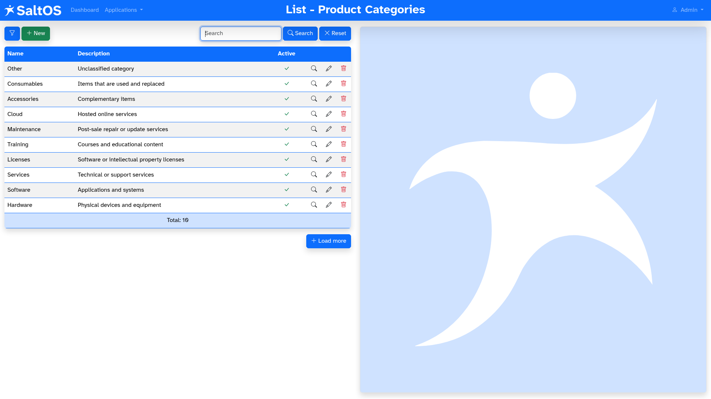
The following fields are displayed in the list view:
- Name: Name of the category.
- Description: Description of what products the category includes.
- Active: Indicates whether this category can be assigned to products.
14.3. Form view
This view is used to create, view or edit product category records.
In create mode, a new tax rule can be defined.
In view mode, tax details are visible but not editable.
In edit mode, existing values can be updated.
The form includes the following fields:
- Active: Enables or disables the category for selection.
- Name: Label of the category as shown in the product form.
- Description: Optional clarification or notes about this category.
14.4. Delete
Categories can only be deleted if they are not assigned to any product.
When in use, they should be disabled instead.
15. Product Types
15.1. Description
The Product Types application is used to classify products and services based on their nature or behavior. This classification helps distinguish between physical goods, services, subscriptions, or other internal categories used for reporting or automation.
Examples of types include "Product", "Service", "Subscription", or "Bundle".
15.2. List view
The following fields are displayed in the list view:
- Name: Label of the product type.
- Description: Optional description to clarify the purpose of the type.
- Active: Indicates whether the type is available when creating products.
15.3. Form view
This view is used to create, view or edit product type records.
In create mode, a new tax rule can be defined.
In view mode, tax details are visible but not editable.
In edit mode, existing values can be updated.

The form includes the following fields:
- Active: Controls availability in product forms.
- Name: Name shown in the type selection when creating a product.
- Description: Notes about the type’s intended use.
15.4. Delete
Types can be deleted only if they are not linked to any product.
Otherwise, deactivation is the recommended action.
16. Taxes
16.1. Description
The Taxes application is used to define and manage tax rates applied to products, quotes, and invoices. It serves as a central repository of tax types such as VAT, sales tax, or exemptions. Each record includes the name, rate, and status, ensuring consistent tax application across the entire ERP system.
16.2. List view
The following fields are displayed in the list view:
- Name: Name or label used to identify the tax (e.g., VAT 21%).
- Description: Optional explanation or additional details about the tax rule or context of use.
- Value: Percentage value of the tax to be applied (e.g., 21 for 21%).
- Active: Indicates whether this tax is available for selection in documents.
- Default: Indicates whether this tax is selected automatically when creating new documents.
16.3. Form view
This view is used to create, view or edit tax entries.
In create mode, a new tax rule can be defined.
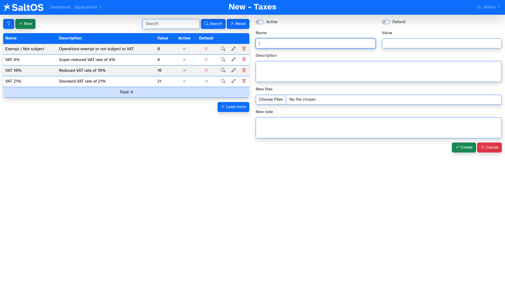
In view mode, tax details are visible but not editable.
In edit mode, existing values can be updated.
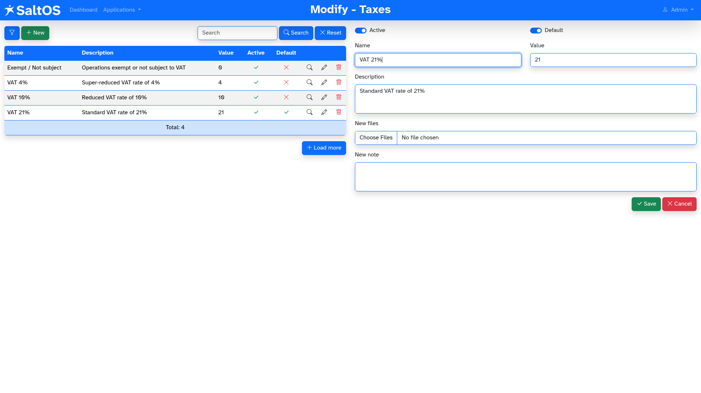
The form includes the following fields:
- Active: Indicates whether this tax is available for selection in documents.
- Default: Indicates whether this tax is selected automatically when creating new documents.
- Name: Name or label used to identify the tax (e.g., VAT 21%).
- Value: Percentage value of the tax to be applied (e.g., 21 for 21%).
- Description: Optional explanation or additional details about the tax rule or context of use.
16.4. Delete
Taxes can only be deleted if they are not used in any invoice or product.
If a tax is in use, it must be deactivated instead to preserve system integrity.
17. Workorders
17.1. Description
The Workorders application is used to register, plan, and track work tasks or service jobs requested by customers. Each work order includes information about the requester, the service required, status, dates, assigned staff, and associated notes or attachments. This module is essential for managing operational activities, such as technical support, installations, or field services.
17.2. List view
The following fields are displayed in the list view:
- Date: The date when the work order was created or scheduled.
- Worker: The employee or technician assigned to carry out the task.
- Client: The customer who requested the service or task.
17.3. Form view
This view is used to create, edit, or view a work order.
In create mode, the form allows registering a new task to be performed.
In view mode, the information is shown as read-only.
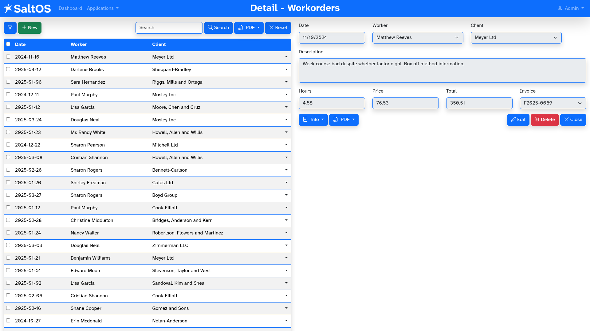
In edit mode, the data can be updated based on progress or feedback.
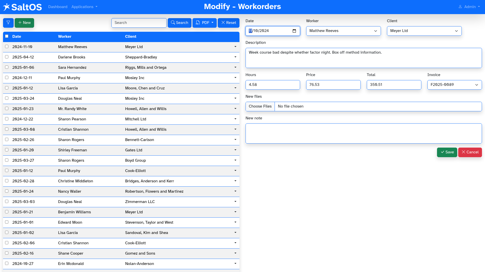
The form includes the following fields:
- Date: The date when the work order was created or scheduled.
- Worker: The employee or technician assigned to carry out the task.
- Client: The customer who requested the service or task.
- Description: Details about the nature or objective of the work to be done.
- Hours: Estimated or actual number of hours allocated to the task.
- Price: Hourly rate or fixed price agreed for the work.
- Total: Final amount calculated based on price and hours.
- Invoice: Invoice number or reference associated with the completed work.
17.4. Delete
Workorders can be deleted only if they are not linked to completed services or logged actions.
A confirmation prompt is displayed before deletion. Deactivation is preferred if you want to retain history without exposing the record.
17.5. PDF generation
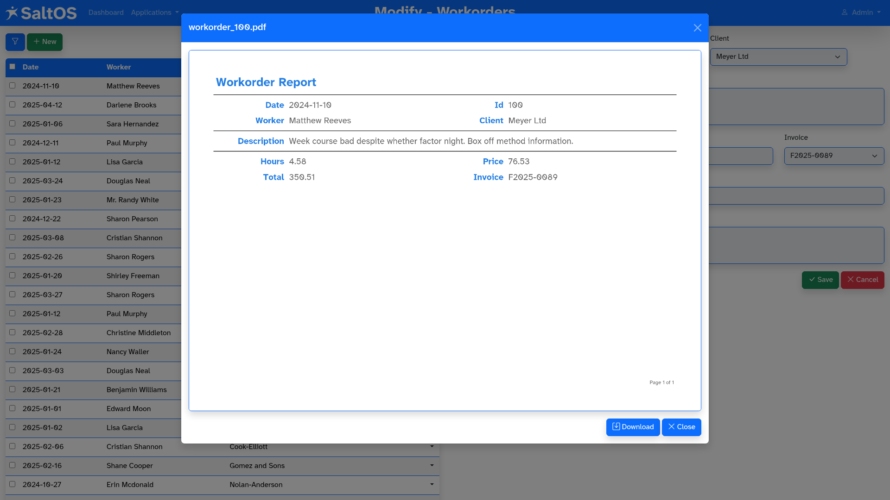
From the individual view of a record (view), the user can generate and download a PDF containing all relevant data of that entry.
From the list view (list), it is possible to select multiple records using the checkboxes and generate a single PDF that includes all of them.
18. Purchase
18.1. Description
The Purchase application is used to register and track purchases made from suppliers. Each purchase record includes invoice details, total amount, purchase date, and associated notes or attachments. This module ensures traceability of expenses and is linked to the Suppliers module to maintain consistency.
18.2. List view
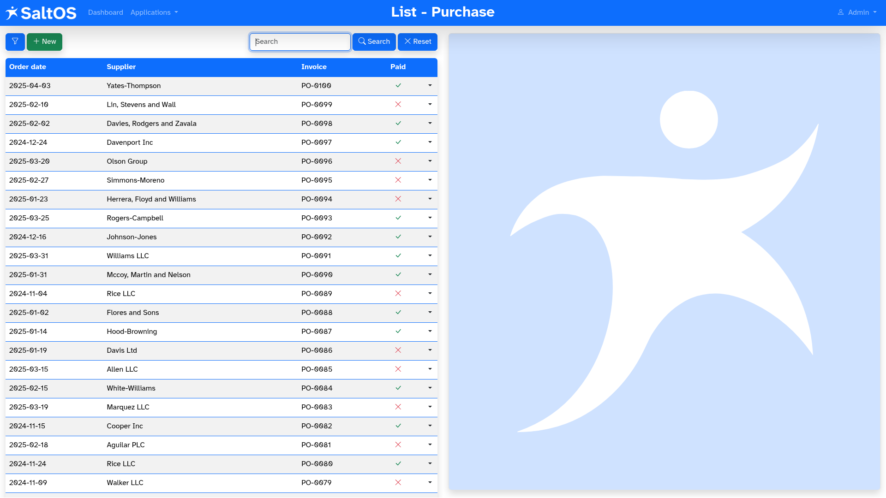
The following fields are displayed in the list view:
- Order date: The date when the purchase order was registered in the system.
- Supplier: The vendor or provider from whom goods or services were acquired.
- Invoice: The invoice number or reference issued by the supplier.
- Paid: Indicates whether the purchase has been fully paid.
18.3. Form view
This view is used for creating, editing or viewing a purchase record.
In create mode, the form is used to enter a new purchase linked to a supplier.
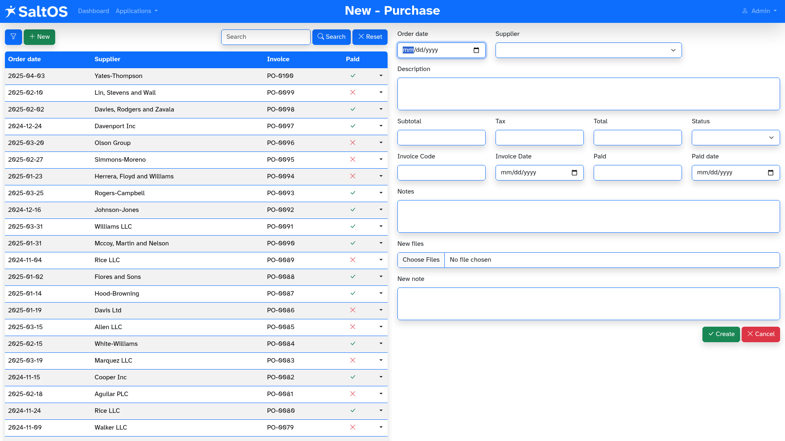
In view mode, it shows the details of the recorded purchase, in read-only mode.
In edit mode, the information can be updated if necessary.
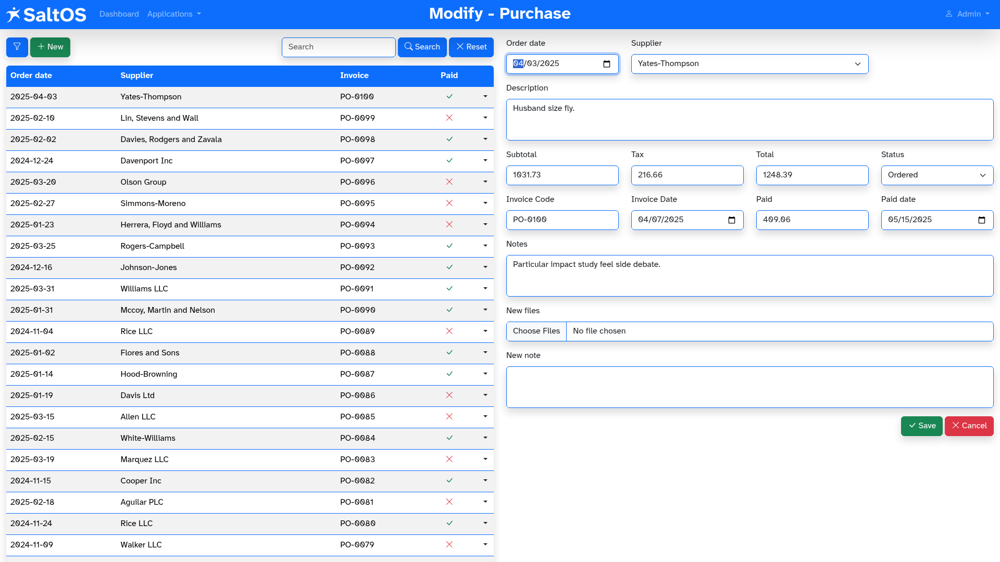
The form includes the following fields:
- Order date: The date when the purchase order was registered in the system.
- Supplier: The vendor or provider from whom goods or services were acquired.
- Description: A short explanation or summary of the purchase content.
- Subtotal: The total amount before taxes and discounts.
- Tax: The total value of taxes applied to the purchase.
- Total: The final total of the purchase, including taxes and discounts.
- Status: The current status of the purchase (e.g., draft, ordered, received).
- Invoice Code: The invoice number or reference issued by the supplier.
- Invoice Date: The official date of the supplier’s invoice.
- Paid: Indicates whether the purchase has been fully paid.
- Paid Date: The date when the payment was made to the supplier.
- Notes: Internal observations or relevant administrative information.
18.4. Delete
Purchase records can be deleted only if they are not linked to accounting records or processes. A confirmation dialog will appear before proceeding.
Once registered and finalized, deletion is restricted based on system permissions and traceability.
19. Purchase Status
19.1. Description
The Purchase Status application defines the stages a purchase record can go through. It allows categorizing purchases according to their state, such as "Draft", "Ordered", "Received", or "Cancelled".
These statuses help in tracking the progress of procurement processes and improve clarity in the Purchase module.
19.2. List view
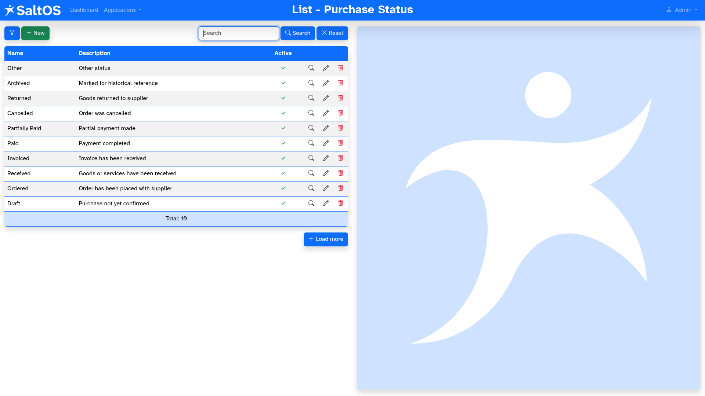
The following fields are displayed in the list view:
- Name: Name of the status (e.g., Received, Cancelled).
- Description: Clarifies how or when this status is used.
- Active: Indicates if the status is currently selectable.
19.3. Form view
This view is used to create, view or edit purchase status entries.
In create mode, the form is used to enter a new purchase linked to a supplier.
In view mode, it shows the details of the recorded purchase, in read-only mode.
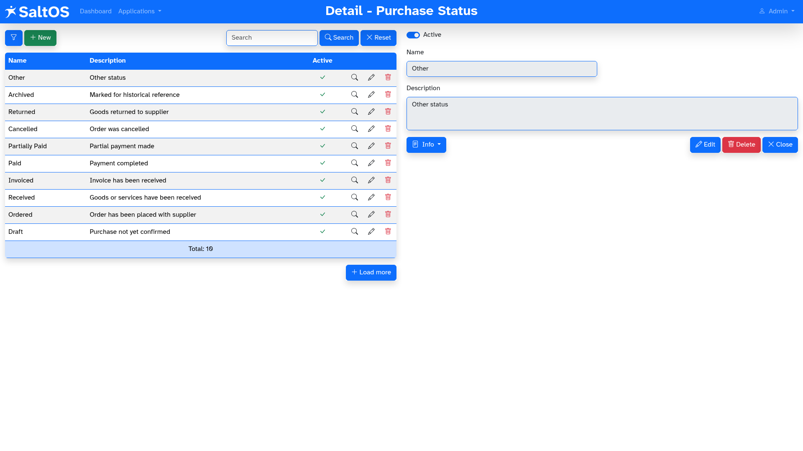
In edit mode, the information can be updated if necessary.
The form includes the following fields:
- Active: Controls availability in the status dropdown.
- Name: Status label as it appears in the purchase form.
- Description: Internal notes about its use case.
19.4. Delete
Statuses can only be deleted if no purchases are currently using them.
In most cases, deactivation is preferred.
20. Suppliers
20.1. Description
The Suppliers application is used to manage the list of vendors or external providers the organization works with. It stores essential information such as identification, contact details, tax code, and classification. This module is linked to purchase workflows, allowing you to associate suppliers with purchases and maintain full traceability.
20.2. List view
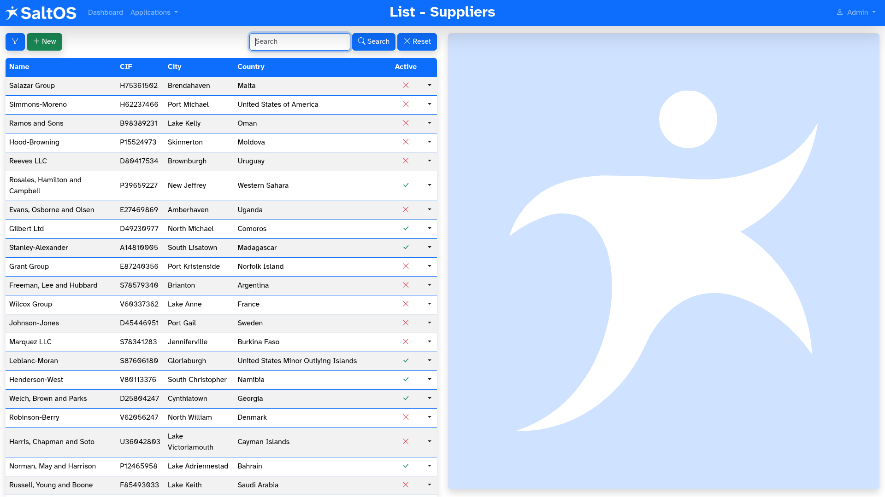
The following fields are displayed in the list view:
- Name: Name or legal entity of the supplier.
- CIF: Tax identification code of the supplier (e.g., VAT, NIF, CIF).
- City: City associated with the supplier's address.
- Country: Country where the supplier is located or registered.
- Active: Indicates whether the supplier is currently active in the system.
20.3. Form view
This view is used for creating, editing or viewing supplier records.
In create mode, the form is blank to add a new supplier.
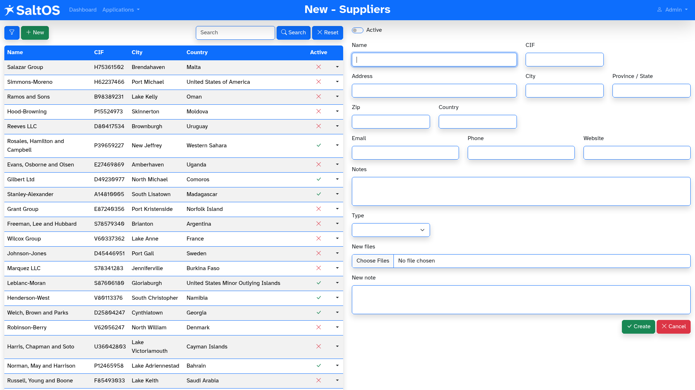
In view mode, the fields are shown in read-only mode.
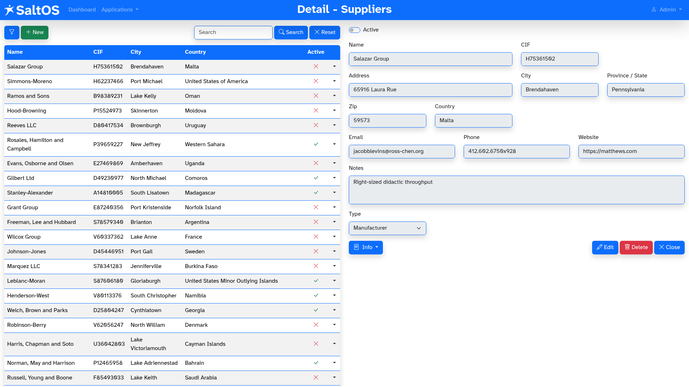
In edit mode, supplier data can be updated.
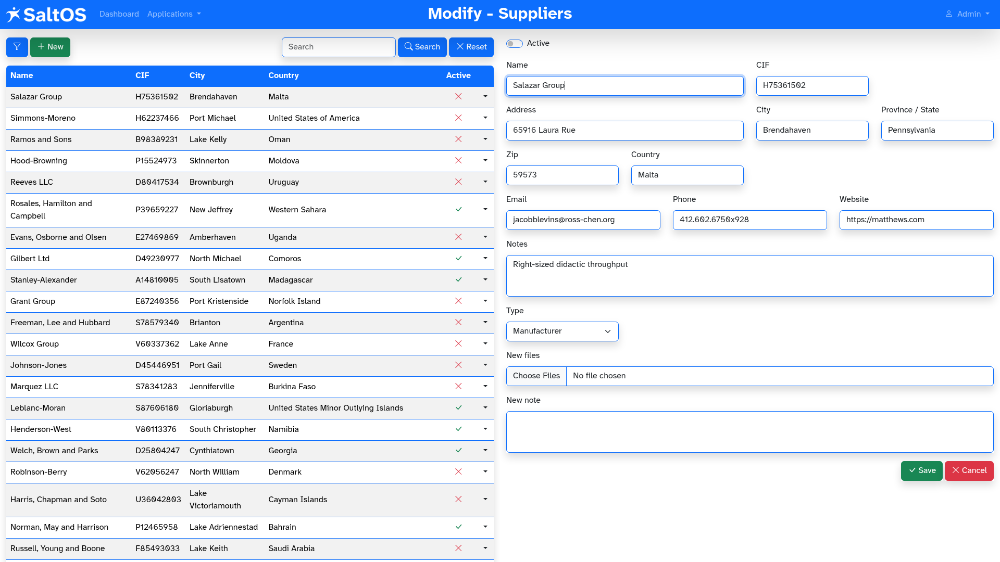
The form includes the following fields:
- Active: Indicates whether the supplier is currently active in the system.
- Name: Name or legal entity of the supplier.
- CIF: Tax identification code of the supplier (e.g., VAT, NIF, CIF).
- Address: Street or billing address of the supplier.
- City: City associated with the supplier's address.
- Province / State: Province or region linked to the supplier's address.
- ZIP: Postal code of the supplier's address.
- Country: Country where the supplier is located or registered.
- Email: Primary contact email address for the supplier.
- Phone: Main contact number for the supplier.
- Website: Website or external link associated with the supplier.
- Notes: Additional internal information or remarks about the supplier.
- Type: Category or classification of the supplier.
20.4. Delete
Supplier records can be deleted if not referenced in purchases or documents. A confirmation dialog appears before deletion.
Once linked to purchases or financial records, the supplier becomes protected from removal.
21. Supplier Types
21.1. Description
The Supplier Types application is used to classify suppliers by category, industry, or relationship. This classification helps filter and organize suppliers, and may be used for segmentation or reporting purposes.
Examples of types include "Distributor", "Manufacturer", "Service Provider", etc.
21.2. List view
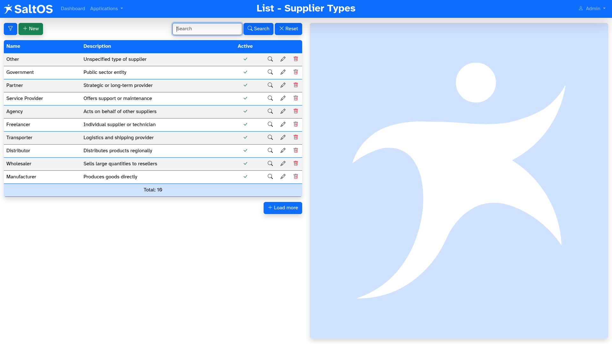
The following fields are displayed in the list view:
- Name: Name of the supplier type.
- Description: Optional clarification or internal note.
- Active: Indicates whether the type can be assigned to suppliers.
21.3. Form view
This view is used to create, view or edit supplier type entries.
In create mode, a new tax rule can be defined.
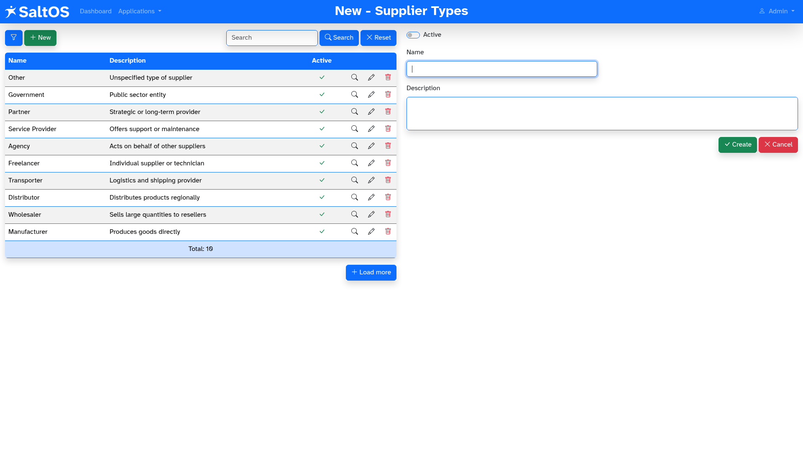
In view mode, tax details are visible but not editable.
In edit mode, existing values can be updated.
The form includes the following fields:
- Active: Enables or disables the type for selection.
- Name: Descriptive label for the type.
- Description: Additional information or context.
21.4. Delete
Supplier types can only be deleted if not currently assigned to any supplier.
If in use, they should be disabled instead of removed.
22. Departments
22.1. Description
The Departments application is used to define the organizational structure of the company by grouping employees into departments. It supports hierarchies, allowing a department to belong to a parent department, and helps organize users and permissions accordingly.
Examples of departments include "Sales", "IT", "HR", or "Logistics".
22.2. List view

The following fields are displayed in the list view:
- Name: Name of the department or organizational unit.
- Code: Unique identifier or reference code for the department.
- Parent: Parent department, if this one is part of a hierarchy.
- Active: Indicates whether this department is currently in use.
22.3. Form view
This view is used to create, view or edit departments.
In create mode, a new tax rule can be defined.
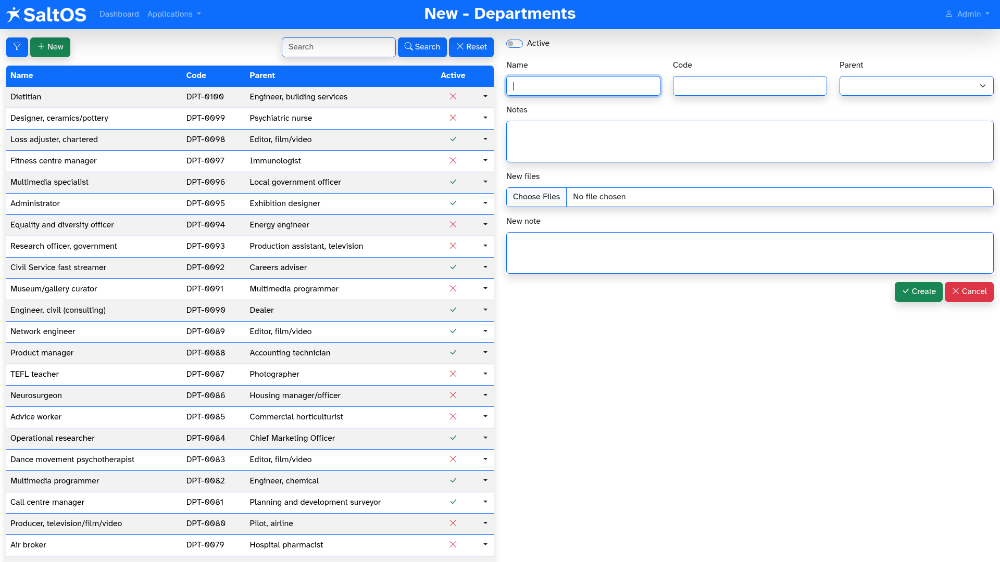
In view mode, tax details are visible but not editable.

In edit mode, existing values can be updated.
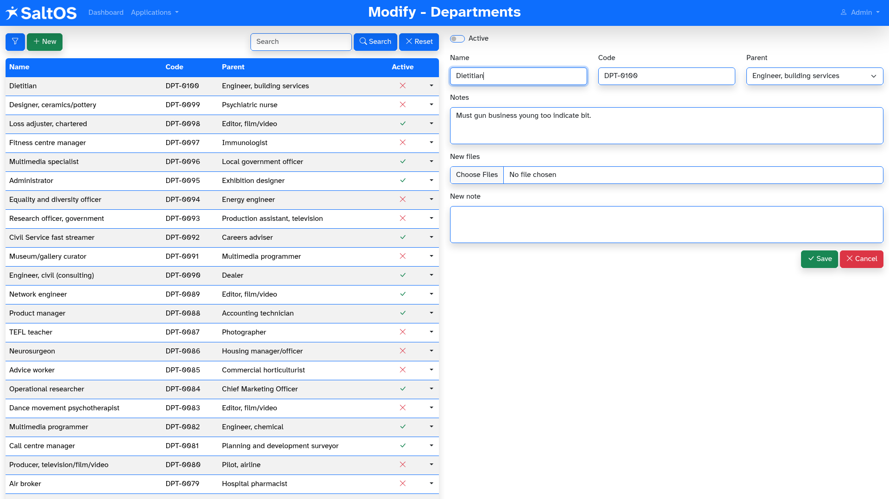
The form includes the following fields:
- Active: Indicates whether this department is currently in use.
- Name: Name of the department or organizational unit.
- Code: Unique identifier or reference code for the department.
- Parent: Parent department, if this one is part of a hierarchy.
- Notes: Additional details about the department's structure, responsibility or purpose.
22.4. Delete
Departments can only be deleted if no employees are currently assigned to them.
If in use, deactivation is recommended instead.
23. Employees
23.1. Description
The Employees application is used to register and manage the personnel working in the organization. It stores personal and professional data including name, contact information, position, department, and system user link. This module is typically used in HR workflows to organize staff and optionally associate them with users of the system.
23.2. List view
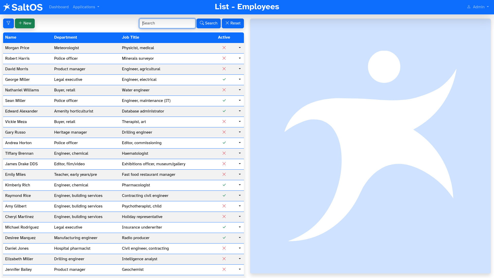
The following fields are displayed in the list view:
- Name: Full name of the employee.
- Department: Department the employee belongs to.
- Job Title: Official job title or position held by the employee.
- Active: Indicates whether the employee is currently active.
23.3. Form view
This view is used to create, view or edit employee records.
In create mode, a new employee profile is added.
In view mode, the profile is shown in read-only format.
In edit mode, the profile can be updated.
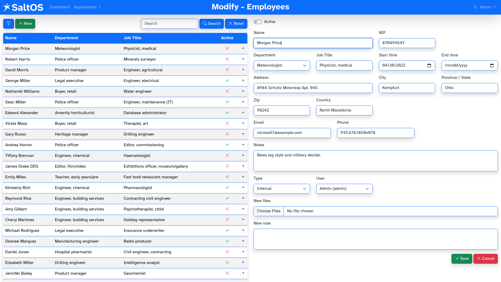
The form includes the following fields:
- Active: Indicates whether the employee is currently active.
- Name: Full name of the employee.
- NIF: Employee's national identification number used for legal or fiscal purposes.
- Department: Department the employee belongs to.
- Job Title: Official job title or position held by the employee.
- Start: Start date of employment or contract.
- End: End date of employment or contract (if applicable).
- Address: Postal address of the employee.
- City: City of residence.
- Province / State: Province or administrative region of residence.
- ZIP: Postal code.
- Country: Country of residence.
- Email: Primary contact email of the employee.
- Phone: Main contact phone number.
- Notes: Additional remarks or HR-related observations about the employee.
- Type: Type or category of employee (e.g., full-time, contractor).
- User: System user account linked to the employee.
23.4. Delete
Employees can be deleted if not linked to system users or historical records.
If in use, the profile must be deactivated instead of deleted.
24. Employee Types
24.1. Description
The Employee Types application allows you to classify employees according to their role, contract, or internal categorization. This helps structure the HR database and supports filtering, reporting, or access control.
Common types include "Full-time", "Part-time", "Contractor", "Intern", etc.
24.2. List view
The following fields are displayed in the list view:
- Name: Title of the employee type.
- Description: Explanation of the type’s purpose.
- Active: Indicates whether the type is currently usable.
24.3. Form view
This view is used to create, view or edit employee type entries.
In create mode, a new tax rule can be defined.
In view mode, tax details are visible but not editable.

In edit mode, existing values can be updated.
The form includes the following fields:
- Active: Controls if the type is selectable.
- Name: Name shown in the type dropdown in employee forms.
- Description: Notes about the type’s intended usage.
24.4. Delete
Employee types can only be deleted if they are not assigned to any employee.
Otherwise, it is recommended to disable them.
25. Certificates
25.1. Description
The Certificates application is used to manage and track SSL/TLS certificates stored or monitored by the system.
This module allows administrators to register certificates, store metadata, monitor expiration dates, and ensure that security infrastructure remains up-to-date.
It is especially useful for managing certificates for custom domains, internal services, or external integrations.
25.2. List view
The following fields are displayed in the list view:
- Certificate nicknames available:: List of certificate aliases already stored and available in the system. It is not a database-driven table, but a visual display of loaded certificates.
25.3. Form view
This view is used to add, review, or update certificate information.
In create mode, the form is empty and ready to enter new data.
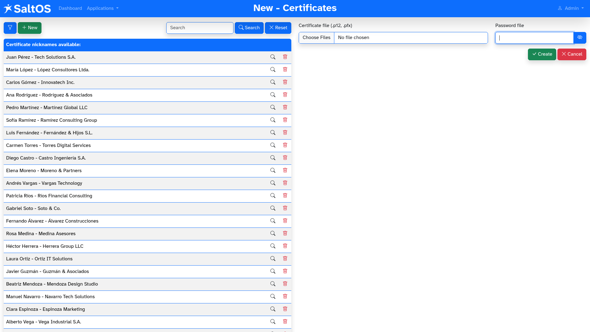
The form includes the following fields:
- Certificate file (.p12, .pfx): File input used to upload one or more certificates in PKCS#12 format. Required to import certificates into the system.
- Password file: Password used to decrypt the uploaded certificate file. This field is required and not autofilled for security reasons.
In view mode, the fields are filled with the selected record and cannot be edited.
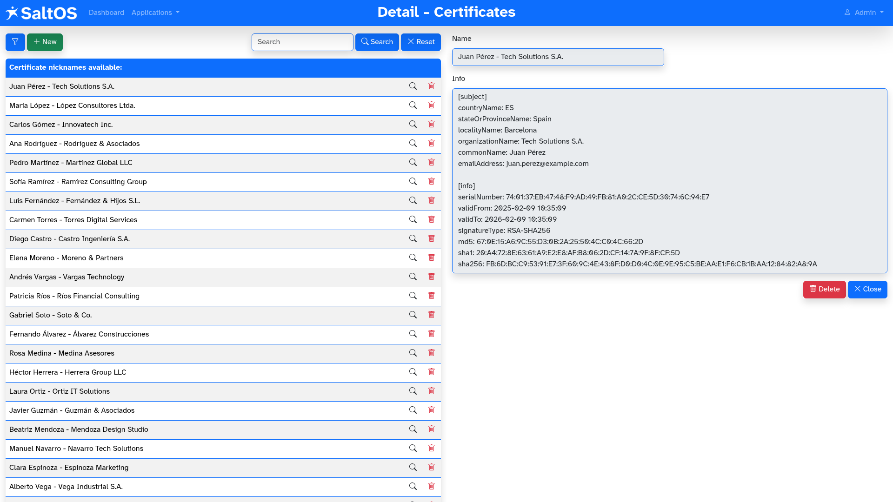
The form includes the following fields:
- Name: Display name or alias of the certificate.
- Info: Technical details of the certificate, including issuer, expiration, and subject. Displayed in a read-only text area.
25.4. Delete
Certificates can be deleted if no longer relevant.
However, it is recommended to retain expired entries for audit purposes.
26. Company
26.1. Description
The Company application stores the identification and contact details of the organization using SaltOS4. This data is used across the system to personalize documents (quotes, invoices, emails, etc.) and define the legal and fiscal identity of the company.
It typically includes the company's name, tax code, address, logo, and preferred language.
26.2. List view
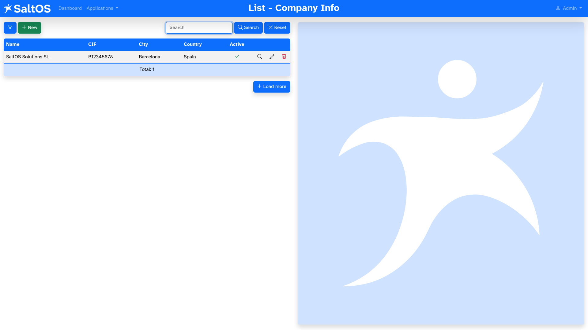
The following fields are displayed in the list view:
- Name: Official name of the company or organization.
- CIF: Tax identification number (NIF, CIF, VAT, etc.) of the company.
- City: City where the company is located.
- Country: Country where the company is legally registered or operates.
- Active: Indicates whether this company profile is active in the system.
26.3. Form view
This view is used to define or edit the company profile.
In create mode, the form is empty and ready to enter new data.
In view mode, the fields are filled with the selected record and cannot be edited.
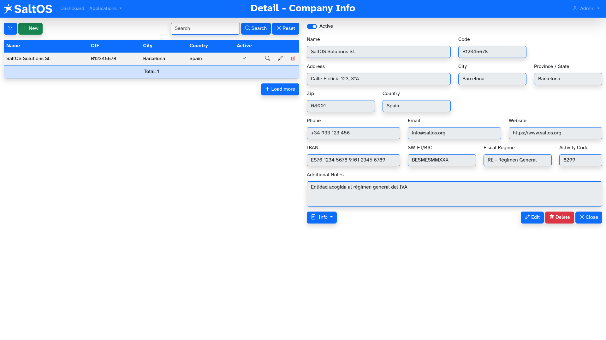
In edit mode, the form is pre-filled and allows modifications.
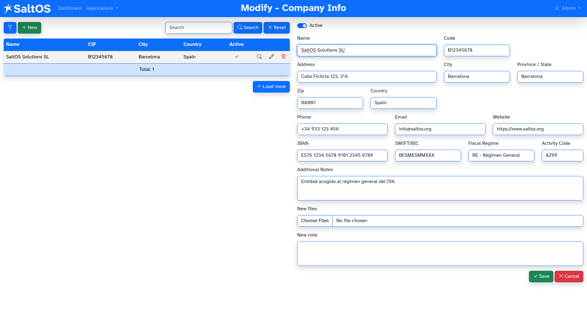
The form includes the following fields:
- Active: Indicates whether this company profile is active in the system.
- Name: Official name of the company or organization.
- Code: Tax identification number (NIF, CIF, VAT, etc.) of the company.
- Address: Official street or mailing address of the company.
- City: City where the company is located.
- Province / State: Province, state, or region where the company is based.
- ZIP: Postal code of the company’s registered address.
- Country: Country where the company is legally registered or operates.
- Phone: Main phone number for company inquiries.
- Email: Primary email address used for administrative or legal contact.
- Website: The public website or landing page of the company.
- IBAN: International Bank Account Number used for wire transfers.
- SWIFT/BIC: SWIFT/BIC code identifying the bank of the company for international transfers.
- Fiscal Regime: Tax regime under which the company operates (e.g., general, simplified, small business).
- Activity Code: Economic activity classification code (e.g., CNAE, NACE).
- Additional Notes: Internal remarks or additional information about the company.
26.4. Delete
The company profile cannot be deleted if it's the only active one in the system.
Only deactivation is allowed in most configurations.
27. Emails
27.1. Description
The Emails application is used to receive, view, and reply to emails from configured accounts within SaltOS4. It acts as a simplified integrated email client that supports reading messages from POP3 or IMAP, viewing metadata and content, and replying using internal or external SMTP servers.
Each message is presented as a visual card in the list view, showing key fields such as sender, subject, date, and a preview of the body. Emails can be viewed in detail, replied to, or deleted. This app is closely integrated with the Emails Accounts module and is essential for managing inbound communication.
27.2. List view
The list view shows incoming emails as clickable buttons or cards. Each entry typically displays:
- Header: The visual summary used in the interface to represent the email message.
- Datetime: The date and time the message was received or sent.
- Subject: The title or subject line of the email message.
- Snippet: A short preview extracted from the beginning of the email body.
- Attachments: List of files attached to the message, with download options.
The interface also includes filters and a search form to filter by sender, subject, account, and date.
27.3. View message
This view shows the full content of an email message, including header metadata and attachments.
The following information is typically displayed:
- From: Sender's email address displayed in the message header.
- To: List of recipients who received the message.
- CC: Additional recipients who received a visible copy of the email.
- BCC: Recipients who received a hidden copy of the email.
- Datetime: Timestamp indicating when the email was sent or received.
- UIDL: Server-side unique identifier used for synchronization.
- Priority: Importance level set by the sender (Low, Normal, or High).
- Sensitivity: Indicates whether the message is Normal, Personal, Private, or Confidential.
- Sent: Confirms that the email was successfully sent.
- New: Marks whether the email is unread or newly received.
- Reply: Indicates if the message was replied to.
- Forward: Indicates if the message was forwarded to another recipient.
- Wait: Flag used to track follow-up or pending response.
- SPAM: Marks whether the email is classified as spam.
- Request confirmation of receipt: Shows whether a read receipt was requested for the message.
- Error: Displays an error message if the delivery failed.
- Subject: The subject line of the email.
- Body: The main content or body of the email, displayed in an embedded viewer.
- Adjunts: List of files attached to the email message.
27.4. Reply / Compose
Users can reply to an existing message or compose a new email using a simplified form.
The reply and compose form includes:
- From: Email account used as the sender for this message.
- To: Primary recipient(s) of the email message.
- CC: Recipients to receive a carbon copy (CC) of the message.
- BCC: Recipients to receive a blind carbon copy (BCC), not visible to others.
- Request confirmation of receipt: Option to request a read receipt confirmation from the recipient.
- Priority: Importance level assigned to the email: Low, Normal, or High.
- Sensitivity: Confidentiality level: Normal, Personal, Private, or Confidential.
- Subject: Subject line of the message, describing its purpose.
- Body: Rich-text content written in the email message.
- Attachments: Files selected to be included along with the message.
27.5. Delete
Emails can be deleted from the list view using the delete icon or action.
Messages are usually deleted locally or flagged for deletion, depending on the server configuration.
27.6. PDF generation
From the individual view of a record (view), the user can generate and download a PDF containing all relevant data of that entry.
From the list view (list), it is possible to select multiple records using the checkboxes and generate a single PDF that includes all of them.
27.7. Widget on the dashboard
The email application (`emails`) publishes a widget on the main dashboard that displays a compact list with the 5 most recently received emails.
This widget allows users to quickly review their most recent messages without entering the full application, improving visibility of recent activity and enabling direct access to each email.
28. Emails Accounts
28.1. Description
The Emails Accounts application is used to configure and manage the email accounts connected to SaltOS4. Each account can be used to send and receive emails via SMTP, IMAP or POP3 protocols. This module allows integration with external email providers and supports authentication, folders, and synchronization options.
28.2. List view
The following fields are displayed in the list view:
- User: User who owns or uses this email account.
- Name: Descriptive label used to identify the email account within the system.
- Email: The email address configured for this account.
- Enabled: Marks the account as active; synchronization will occur.
28.3. Form view
This view is used to create, view or edit an email account.
In create mode, a new account is configured from scratch.
In view mode, account settings are shown without allowing changes.
In edit mode, the configuration can be updated or corrected.
The form includes the following fields:
- User: User who owns or uses this email account.
- Name: Display name or label used to identify the account.
- Email: Actual email address configured for this account.
- Signature: Text or HTML signature added automatically to outgoing messages.
- Host: POP3 server hostname used to receive emails.
- Port: Network port used to connect to the POP3 server (e.g., 110, 995).
- Extra: Additional POP3 connection settings, such as TLS.
- User: Username for POP3 authentication.
- Password: Password for the POP3 account.
- Delete: Whether messages are deleted from the server after download.
- Days: Number of days to keep messages on the server.
- Host: SMTP server hostname used to send emails.
- Port: Network port used for SMTP communication (e.g., 25, 465, 587).
- Extra: SMTP encryption method: none, SSL, or TLS.
- User: Username for SMTP authentication.
- Password: Password for the SMTP server account.
- Disabled: Marks the account as inactive; no synchronization will occur.
- Privated: Restricts access to the account to its owner only.
- Default: Sets this account as the default for sending emails.
- Add me to CC: Automatically includes the sender in the CC field.
- Confirm reading to: Sends a read receipt request with each email.
28.4. Delete
Accounts can be deleted if they are not in use or connected to recent email activity.
Disabling is preferred when preserving configuration for future use or audit.
29. Groups
29.1. Description
The Groups application is used to define roles or user categories within SaltOS4. Each group aggregates permissions that determine what its members can see or do in the system. Groups simplify the administration of access control by allowing permission management at the group level instead of per user.
29.2. List view
The following fields are displayed in the list view:
- Code: Internal identifier or reference code of the group.
- Name: Name or title used to identify the group.
- Description: Explanation of the purpose or scope of the group.
- Active: Indicates whether this group is enabled for use.
29.3. Form view
This view is used to create, view or edit user groups.
In create mode, a new group is defined.
In view mode, the group details and assigned permissions are shown.
In edit mode, you can update the group’s name, description, and permission set.
The form includes the following fields:
- Active: Indicates whether this group is enabled for use.
- Code: Internal identifier or reference code of the group.
- Name: Name or title used to identify the group.
- Description: Explanation of the purpose or scope of the group.
- Users: List of users assigned to this group.
- Applications and permissions: Matrix of allowed apps and operations granted to this group.
29.4. Delete
Groups can be deleted only if no users are assigned to them.
If the group is in use, it is recommended to disable it to preserve historical access information.
30. Users
30.1. Description
The Users application is used to manage the accounts that have access to the SaltOS4 system. Each user is assigned credentials, roles, and permissions, and can optionally be linked to an employee profile. This module is essential for access control, personalization, and audit tracking.
30.2. List view
The following fields are displayed in the list view:
- Username: Unique login name used to access the system.
- Name: Full name of the user, used for display and identification.
- Description: Internal comments or notes about the user profile.
- Group: User group or role assigned for permission control.
- Active: Indicates whether the user account is currently enabled.
30.3. Form view
This view is used to create, view or edit user accounts.
In create mode, the form is used to register a new user with login credentials.
In view mode, the account details are shown without edit capability.
In edit mode, you can update user information or reset credentials.
The form includes the following fields:
- Active: Indicates whether the user account is currently enabled.
- Username: Unique login name used to access the system.
- Group: User group or role assigned for permission control.
- Name: Full name of the user, used for display and identification.
- New password: New password to assign to the user (for resets or changes).
- Retype password: Confirmation of the new password to avoid typos.
- Description: Internal comments or notes about the user profile.
- Start: Start date from which the user account is valid.
- End: Expiration date after which the user cannot log in.
- Days: Days of the week on which the user is allowed to access the system.
- Groups: Additional groups or roles associated with this user.
- Applications and permissions: Detailed matrix of app access and specific actions allowed for the user.
- Passwords history: List of previously used passwords for audit and reuse prevention.
30.4. Delete
User accounts can be deleted if they have not logged in or are not linked to any activity log.
Otherwise, it is recommended to disable them instead of deletion for audit purposes.
31. Config Log
31.1. Description
The Config Log application provides a trace of all configuration changes made within SaltOS4. It is used to monitor modifications to system parameters, app settings, or internal preferences. This module is essential for administrators who want to audit changes and ensure consistent system behavior over time.
31.2. List view
The following fields are displayed in the list view:
- User: User who made the configuration change.
- Key: Configuration key that was modified.
31.3. View entry
This view displays the full details of a single configuration change record.
In create mode, the form is empty and ready to enter new data.
In view mode, the fields are filled with the selected record and cannot be edited.
In edit mode, the form is pre-filled and allows modifications.
It includes:
- User: User who made the configuration change.
- Key: Configuration key that was modified.
- Value: New value assigned to the configuration key.
31.4. Delete
Entries in the config log cannot be deleted under normal circumstances.
This log is designed to ensure full traceability and auditability of administrative actions.
32. Cron Log
32.1. Description
The Cron Log application stores the execution history of scheduled tasks (cron jobs) within SaltOS4. It allows administrators to monitor background processes such as email retrieval, data imports, backups, or custom jobs. This module is essential for troubleshooting and verifying that scheduled operations are running correctly.
32.2. List view
The following fields are displayed in the list view:
- Command: Command or script executed by the cron system.
- Start: Start time of the scheduled task execution.
- Out: Short version or preview of the standard output.
- Err: Short version or preview of the error output.
32.3. View entry
This view displays the full result of a single cron job execution.
It includes:
- Command: Command or script executed by the cron system.
- PID: Process ID assigned to the running cron task.
- Start: Start time of the scheduled task execution.
- Stop: Time when the task finished running.
- STDOUT: Standard output generated by the task during execution.
- STDERR: Standard error output generated by the task.
32.4. Delete
Cron log entries are not meant to be deleted regularly.
Automatic cleanup or manual purge may be configured to remove older entries.
33. Files Log
33.1. Description
The Files Log application records all file access events within SaltOS4. It tracks when files are viewed, downloaded, or otherwise accessed by users, including associated metadata. This module provides a complete audit trail for document activity, supporting traceability and data governance policies.
33.2. List view

The following fields are displayed in the list view:
- Name: Name of the accessed or managed file within the system.
- Type: File format or classification (e.g., PDF, image, text).
- Size: Size of the file in bytes.
33.3. View entry
This view shows detailed information about a file access event.
It includes:
- Name: Name of the accessed or managed file within the system.
- Type: File format or classification (e.g., PDF, image, text).
- Size: Size of the file in bytes.
- Data: Internal content, metadata or serialized structure representing the file access or action.
33.4. Delete
Files log entries are usually not deleted manually.
They are retained for accountability and security monitoring, and may be purged automatically based on system settings.
34. Push Log
34.1. Description
The Push Log application records all push notifications triggered by the system. These notifications are typically sent to users to alert them about actions, updates, or system events in real time. This module allows administrators to monitor the flow of notifications and diagnose potential issues in the delivery process.
34.2. List view
The following fields are displayed in the list view:
- User: User who triggered or received the push notification.
- Datetime: Date and time when the push notification was recorded.
- Type: Category of the push message (e.g., info, warning, error).
34.3. View entry
This view shows full details of a single push notification.
It includes:
- User: User who triggered or received the push notification.
- Datetime: Date and time when the push notification was recorded.
- Type: Category of the push message (e.g., info, warning, error).
- Message: Content or summary of the push message sent.
- Timestamp: Internal system timestamp when the event was logged.
34.4. Delete
Push log entries are generally not deleted and are kept for audit purposes.
In specific maintenance scenarios, old records may be purged, but this requires explicit permissions.
35. Tokens Log
35.1. Description
The Tokens Log application tracks the usage of authentication tokens across the system. These tokens are typically used in API calls, automated scripts, or temporary login sessions. This module allows administrators to monitor access to the system and detect potential misuse or unauthorized attempts.
35.2. List view
The following fields are displayed in the list view:
- User: User associated with the token.
- Created: Date and time when the token was created.
- Token: The token string used for authentication or access.
- Active: Indicates whether the token is currently valid and usable.
35.3. View entry
This view displays all information related to a specific token access.
It includes:
- Active: Indicates whether the token is currently valid and usable.
- User: User associated with the token.
- Created: Date and time when the token was created.
- Updated: Date and time of the last update to the token's state.
- Remote Addres: IP address from which the token was used or created.
- User Agent: Browser or client used when the token was generated or accessed.
- Token: The token string used for authentication or access.
- Expires: Expiration date and time of the token, after which it is no longer valid.
35.4. Delete
Token log entries are not meant to be deleted manually.
They form part of the system’s audit and access control history, and are subject to automatic cleanup if configured.
36. Trash Log
36.1. Description
The Trash Log application records all deletions performed in the system, acting as a recycle bin for SaltOS4. It allows administrators and advanced users to inspect what data has been removed, when, by whom, and from where. This module is key for auditability and helps identify accidental deletions or unauthorized actions.
36.2. List view
The following fields are displayed in the list view:
- User: User who performed the deletion.
- Datetime: Exact date and time when the record was deleted.
- Name: Descriptive name of the deleted record or file.
36.3. View entry
This view displays all recorded information about a deleted item.
It includes:
- Old ID: Original identifier of the record before deletion.
- User: User who performed the deletion.
- Datetime: Exact date and time when the record was deleted.
- Reg ID: Internal registry ID assigned to the deleted record.
- App: Application or module from which the record was removed.
- Uniq ID: System-wide unique identifier for the deleted item.
- Name: Descriptive name of the deleted record or file.
- Size: File size in bytes, if the deleted item was a file.
- Type: MIME type or classification of the deleted file or record.
- File: Original filename or path of the deleted file.
- Hash: Checksum used to verify the content of the deleted item.
36.4. Delete
Trash log entries cannot be deleted directly from the interface.
SaltOS4 retains them for accountability and legal traceability unless automatic pruning is configured.
37. Upload Log
37.1. Description
The Upload Log application registers all file uploads made through SaltOS4, whether manual or automated. It helps track the origin, user, and context of each uploaded file, and is useful for auditing, debugging, and verifying that uploads are being processed correctly.
37.2. List view
The following fields are displayed in the list view:
- User: User who uploaded the file.
- Datetime: Timestamp when the file was uploaded to the system.
- App: Module or application from which the upload was triggered.
- Name: Original filename as provided by the user.
37.3. View entry
This view shows full details of a single uploaded file log entry.
It includes:
- User: User who uploaded the file.
- Datetime: Timestamp when the file was uploaded to the system.
- Uniq ID: Unique identifier internally assigned to the upload entry.
- App: Module or application from which the upload was triggered.
- Name: Original filename as provided by the user.
- Size: Size of the uploaded file in bytes.
- Type: MIME type or format of the uploaded file.
- File: Stored filename used by the system to manage the file internally.
- Hash: Checksum (e.g., MD5 or SHA) to verify file integrity or detect duplicates.
37.4. Delete
Upload log entries are normally preserved for historical traceability.
If needed, old entries may be deleted manually or through automatic maintenance routines.